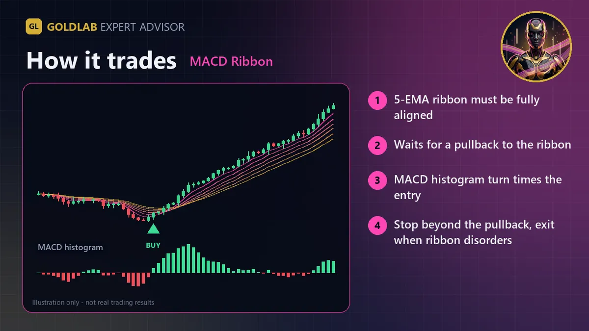

GoldLab MACD Ribbon is an Expert Advisor that combines an EMA ribbon with the MACD histogram to join established trends after a pullback. It was designed for XAUUSD (Gold) and also runs on forex pairs and other CFDs. Every trade has a stop-loss.
How it trades
- Trend: the EMA ribbon (8, 13, 21, 34, 55) must be fully aligned - every faster EMA above the slower one for buys, below for sells. Mixed ribbon = no new trades.
- Pullback: within the last few bars price must have pulled back to the second ribbon line (EMA 13), and the close must still be on the trend side of the slowest EMA.
- Entry: the MACD histogram (MACD line minus signal) crosses zero back in the trend direction, or (optional) turns back in the trend direction while still on the pullback side of zero.
- Stop-loss: beyond the pullback extreme plus an ATR buffer, kept between a minimum and maximum ATR distance.
- Exits: take-profit as a multiple of the stop distance, break-even after the chosen profit, and a ribbon exit - the trade is closed when the ribbon loses its order (fast: EMA 8 crosses EMA 21, or medium: EMA 13 crosses EMA 34).
Risk management
- Risk % per trade (default 1% of equity) - the lot is calculated from the actual stop distance. A fixed lot can be used instead.
- Daily loss limit (default 3% of the day-start equity).
- Maximum spread filter and optional trading hours.
- Free-margin check, broker volume limits and stop/freeze levels are respected before every order. One position at a time; works on hedging and netting accounts.
Inputs and default settings
| Group | Input | Default | Meaning |
|---|---|---|---|
| Strategy | Signal timeframe | H1 | Timeframe for the ribbon and MACD (chart timeframe can be anything) |
| Strategy | Ribbon EMAs | 8 / 13 / 21 / 34 / 55 | Must be in increasing order |
| Strategy | MACD fast / slow / signal | 12 / 26 / 9 | Histogram source |
| Strategy | Allow histogram turn | true | Enter on a turn, not only on a zero-cross |
| Strategy | Pullback lookback (bars) | 5 | Recent touch of EMA 13 required |
| Stops | ATR period / Stop buffer (x ATR) | 14 / 0.3 | Stop placement |
| Stops | Min / Max stop (x ATR) | 1.0 / 3.0 | Limits for the stop distance |
| Stops | Take-profit (x stop) | 2.0 | 0 = none |
| Stops | Ribbon exit | Fast | Fast, Medium or Off |
| Stops | Break-even (x stop) | 1.0 | 0 = off |
| Position size | Risk % / Fixed lot / Max lot | 1.0 / 0 / 10 | Position sizing |
| Safety | Daily loss limit % | 3.0 | 0 = off |
| Safety | Max spread (points) | 50 | 2-digit gold scale: 100 = 1.00 USD |
| Safety | Use hours / Start / End | false / 1 / 22 | Optional server-time window |
| Safety | Magic number | 26100801 | Change it to run several copies on one symbol |
Recommended setup
- Symbol: XAUUSD (or your broker's gold symbol). Signal timeframe: M30, H1 or H4.
- Hedging or netting accounts; low-spread accounts preferred for gold.
- Start on a demo account with the default 1% risk and test the settings in the Strategy Tester with your broker's data first. A VPS is recommended for 24/5 operation.
Honest notes
No martingale, no grid, no averaging - every position has a stop-loss. The EA only trades when the ribbon shows a clean trend, so it can stay flat for long periods in sideways markets, and trend reversals right after entry will produce losses. Trading gold, forex and CFDs is high risk and you can lose your capital. No trading system wins every trade, and past or backtested results do not guarantee future results. Only trade money you can afford to lose and always test on a demo account first.

Plan your risk before you run it
- Check the lot the EA will use for your balance and stop with the XAUUSD lot size calculator and the margin calculator.
- Compare targets and stops with the risk reward calculator.
- Best Timeframe for Gold Trading: Pros and Cons
- How to Set a Stop Loss on Gold (ATR Method)
FAQ
What is an EMA ribbon?
A ribbon is a set of moving averages of increasing length. When they are stacked in order and fanned out, the trend is strong; when they cross and tangle, the trend has weakened, which the EA also uses as an exit.
Is there a free demo?
Yes. Every MQL5 Market product has a free demo that runs in the MetaTrader 5 Strategy Tester, so you can test it on your broker's own data before buying.
Does it use martingale, grid or averaging down?
No. Every position is opened with a stop-loss, the lot size comes from your risk % (or a fixed lot), and there is a daily loss limit.
Which broker and account do I need?
Any MetaTrader 5 broker that offers XAUUSD, on a hedging or netting account. A low-spread account and a VPS for 24/5 operation are recommended.
Can this EA guarantee profits?
No. No trading system wins every trade, and backtest or past results do not guarantee future results. Start on a demo account with the default risk.
Trading gold, forex and CFDs is high risk and you can lose your capital. This page is for information only and is not investment advice. Illustrations are not trading results.